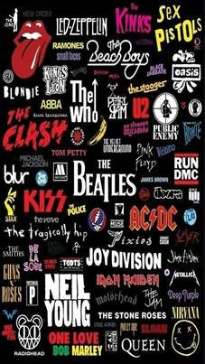

Es un vocablo inglés que hace referencia a un género musical de ritmo muy marcado, nacido a partir de la fusión de varios estilos del folclore estadounidense y popularizado desde la década de 1950. En la actualidad, suele utilizarse el término rock para nombrar a los estilos modernos derivados del rock and roll.
La guitarra eléctrica es la gran protagonista del Rock a punto tal que su sonido se ha hecho típico del género y se asocia a él directamente. Otros instrumentos típicos son el bajo, la batería y el teclado o piano eléctrico.
Algunas de sus características más importantes son:
- La estructura: este género musical se basa en un tipo de versos cortos, sobre una base de pocos acordes, que se distribuyen entre las estrofas y el estribillo con un ritmo constante.
- Los solos: destaca la incorporación de solos instrumentales en las canciones, reemplazando con estrofas determinadas las frases cantadas.
- Polifonía instrumental: el rock aportó a la música la idea de polifonía con instrumentos que interactúan e improvisan sobre la melodía.
Compositores destacados del género: Jimi Hendrix, Eric Clapton, Bob Dilan
El músico y cantante Elvis Presley (1935-1977) es considerado el Rey del Rock y uno de sus pioneros.
La banda más importante del rock, surgió en Inglaterra: The Beatles. Fue formada en 1960 por John Lennon, Paul McCartney, George Harrison y Ringo Starr.
Sin embargo han existido otras grandes bandas como The Doors, Pink Floyd, Queen, The Rolling Stones, entre otros.
El rock siempre se asoció a la rebeldía y al ímpetu juvenil. En sus orígenes aparecía más asociado a su tempo elevado, la amplificación de la guitarra y los bailes.
